Handmade Objects
Italian Bamboo Bar Cabinet in the French Riviera Taste
· 20th century
Price Upon Request
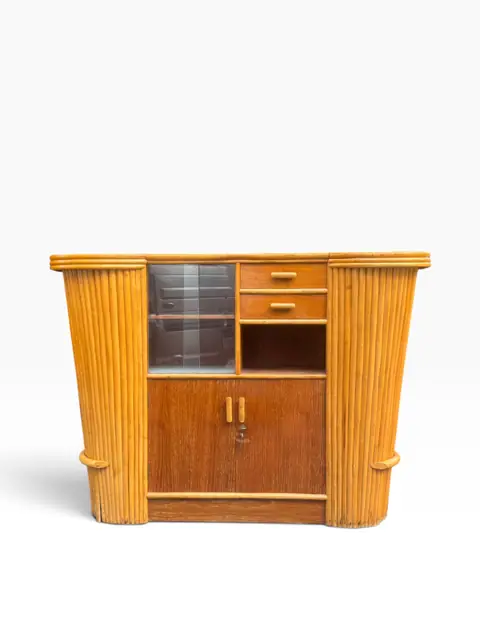
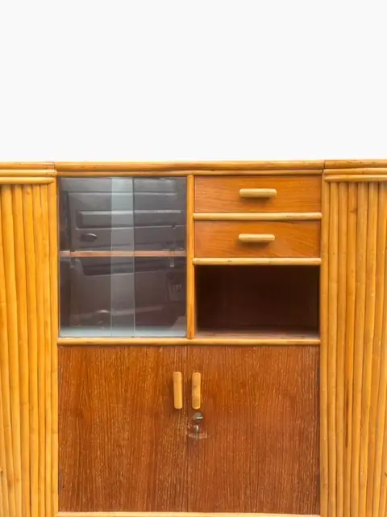
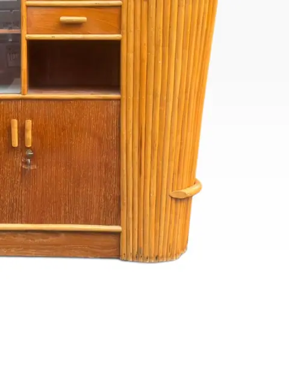
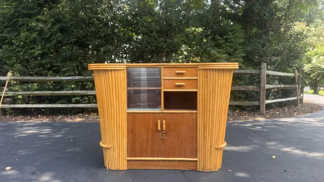
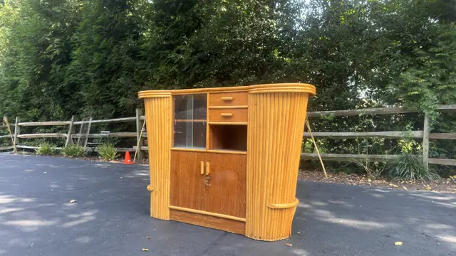
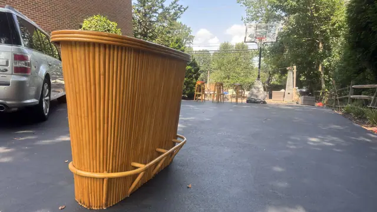
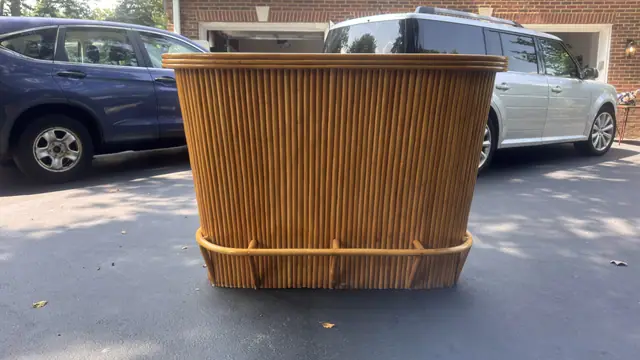
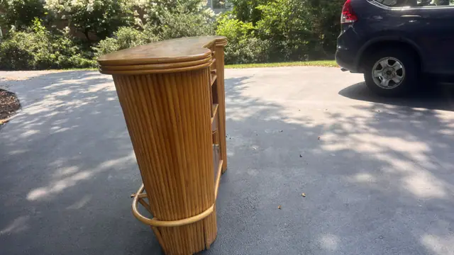
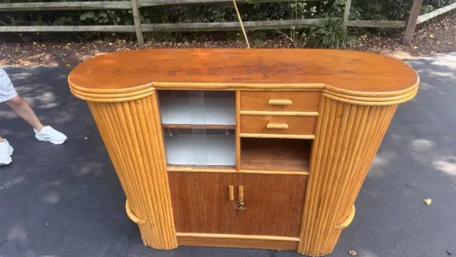
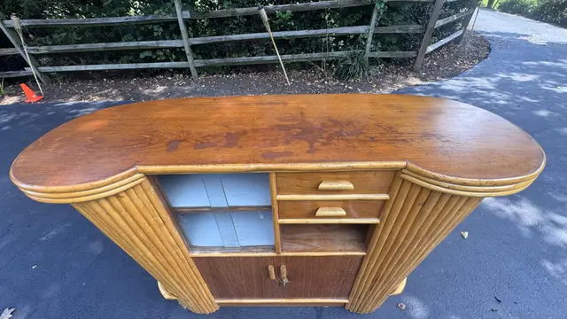
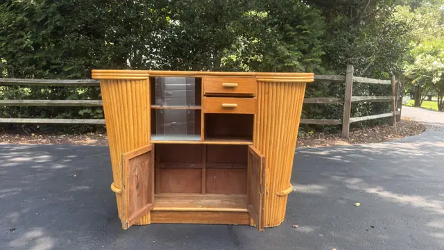
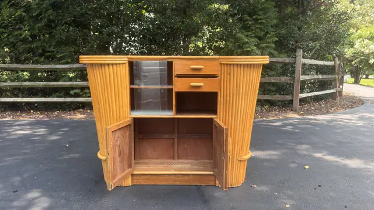
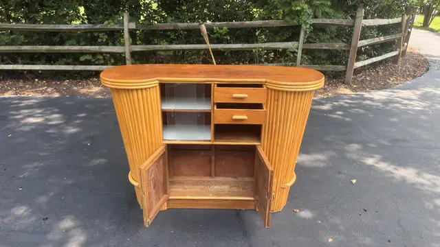
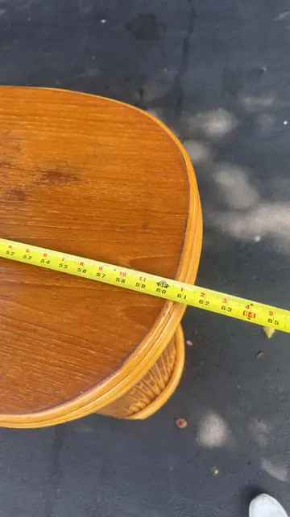
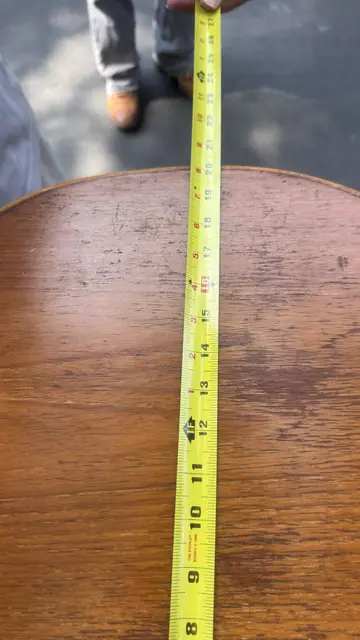
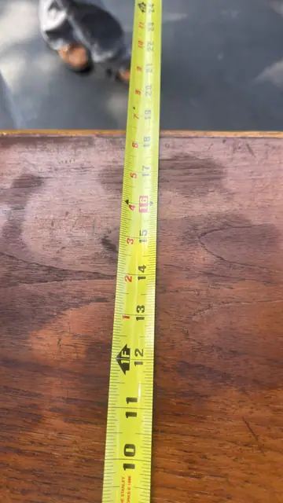
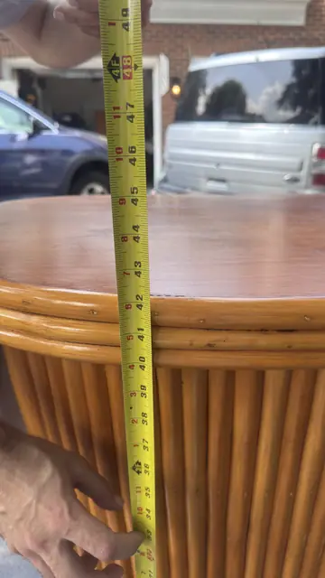
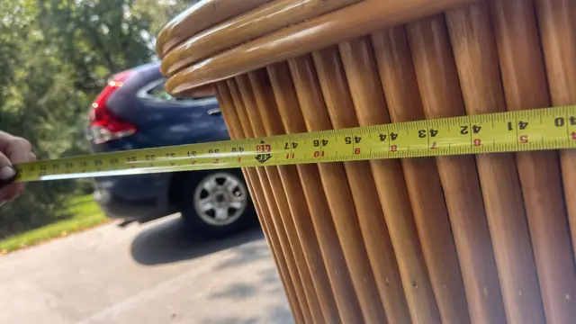
About the Item
A circa-1960s Italian cocktail cabinet wrapped in vertical bamboo canes, in the French Riviera manner associated with Tito Agnoli. The curved case opens to a glass-front display compartment, two drawers and a lower cupboard with bottle storage. Warm honey-toned rattan throughout. Dimensions: 60 in W x 24 in D x 43 in H (152 x 61 x 109 cm) — read from tape measure No label visible. Same bamboo family as ilan_080; construction and form consistent with Italian 1960s Riviera bar furniture.
Details
- Creation Year:
- 20th century
- Medium:
- Bamboo, rattan and wood
- Period:
- 20Th
- Condition:
- Offered in the condition shown in the photographs.
- Reference Number:
- VO-349